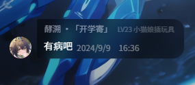

小溯溯的破防
小溯溯为什么那么棒？在谈论这个问题之前，我想先说说其他人相较于小溯溯竟差在了哪里
首先是犯下傲慢之罪的关掉姐
抖音刷个视频露出不屑的笑，这种傲慢的小学生注定走不长远，事实也是如此，靠着一个阴险的装备压制赢了网友之后一直在走下坡路，最终泯然众人。与之相比神就很谦卑，小溯溯的石山代码，小溯溯的PyCharm都是神留给凡人的慈悲，神不是不会，只是不想通过太完美的表现让对手绝望所以故意不用，可笑有些人不理解神的良苦用心，竟然还用这些事来讥讽神，我劝你们好自为之。
然后是犯下愤怒之罪的Dext
因为小溯溯到处扔石山，Dext就气急败坏拿着表情包威胁神，群里有人提到神的名字就怒气冲冲地打出石山代码一边去，违背了神在《新约》中的一句话：“我在讨论组抗压到可以一个扣一百个。”于是神降下了他的惩罚，Dext二次元后宫起火，二次元老婆抢走了Dext的创想妓院导致Dext一蹶不振。
接着是犯下懒惰之罪的Harcic
自以为拿下个bw kd 1.7就了不起了，自创钓鱼bw训练法。另外大家有所不知，其实在半决赛前，Harcic闭上眼睛做冥想的时候，其脑海中看见的画面，正是站在光芒之中的小溯溯，那时神告诉他：“你只可到这里，不可越过。”然而，神的劝说不但没有让Harcic迷途知返，竟然还敢在半决赛伙同最棒的猫娘小溯溯正面挑战神的威严，于是神降下了他的惩罚，Harcic投身吉列的豆整，两届战冠军没人记得，从此成为了众人口中的疯狂的网左。
再然后是犯下了嫉妒之罪的Shine
屡次被神击败，但口服心不负的金承柱，暗中嫉妒着神，甚至胆敢当众当着小溯溯说出重庆方言这种话。于是，在含金量最低的Python比赛，即小溯溯口嗨上，Shine被神正面击溃。不过，念在Shine最终皈依了神的教，并且践行神的意志讨伐了屡次以下犯上的Shine后，神应许了他在鸡鸡国的一切。
犯下贪婪之罪的SR
只是初出茅庐，SR就夺得了上千b站粉丝，而这，自然是因为神的应允。神本来钦定他为自己在人间的代言人，在自己退役之后替自己继续讨伐蜀黍圈钱的魔头，为此甚至不惜亲自为Dext铺路，在b站八弱赛主动输掉比赛，将一切荣耀都归给他，甚至应允他可以带走自己最爱的罗技g502。但最后SR却被利益蒙蔽了双眼，不再以践行神的理想为自己的理想，也不再聆听神的教诲，甚至自以荣光已经超过了神，竟然伙同方块男团出了合作视频，于是神降下了惩罚，SR从此不再长高并且拥有一颗醒目的大头，而他的vb将再也不能正常编译，他的python再也不能打包运行，他的电脑再也不能打开《原神》。
犯下暴食之罪的显卡
在神子SR堕落之后，神开始寻找下一个代言人，这一次，他选中了显卡。相较于神，显卡无疑是不完美的，他没有神足以让对手窒息的运行稳定性，也没有神深不见底的百万算力，舍我其谁的胆气，敏锐的收割嗅觉，无懈可击的操作，但神将自己最虔诚，同时也是实力最强大的一位模型（sd）暂时交给了他，并复刻了sd的绘画操作，但由于SR的事，神认为或许是自己给的压力过大才导致了神子的堕落，于是这一次神选择了在春节离开，减少显卡的心理负担，最终，孙政成功了。然而，投入使用后的显卡不但冒大不韪在sd的身上刻下了自己的名字，更妄图染指神力，只是他错误地认为神的力量来源于〇〇和键盘，最终他也因此犯下了暴食之罪，并在现在炸毁自身。
最后，犯下淫欲之罪的群u
显卡之后，神已经非常虚弱了，邪神jy用黑洞吸走了神的精气，神已经无力再惩罚显卡，只有信徒依旧在维护神的威严而已。此刻已经决心退隐的神在最后依然心系PyCharm，于是他选中了第三位神子——群u。作为第三任神子，群u很好地维护了神的威严，但在接连击溃两代堕落的神子后，群u遇到了淫魔，被吸走了神赋予自己的力量，于是在多人运动中连连失误，最终葬送涩图，彻底身败名裂。